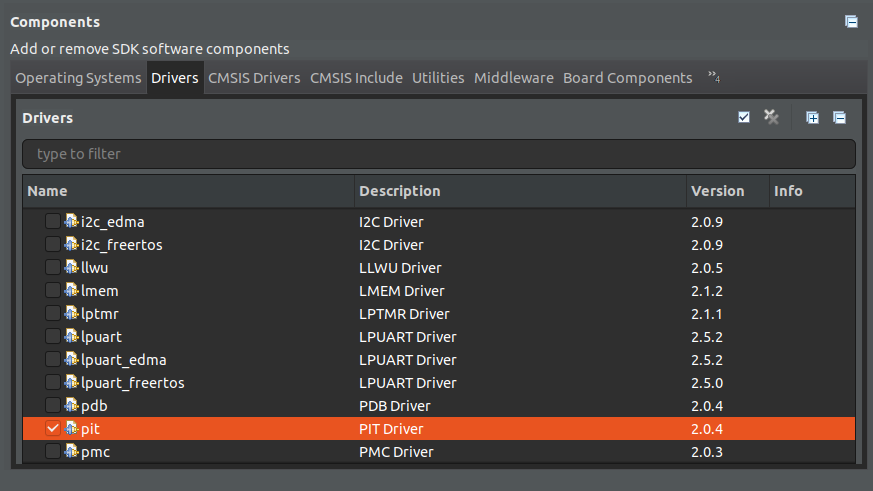
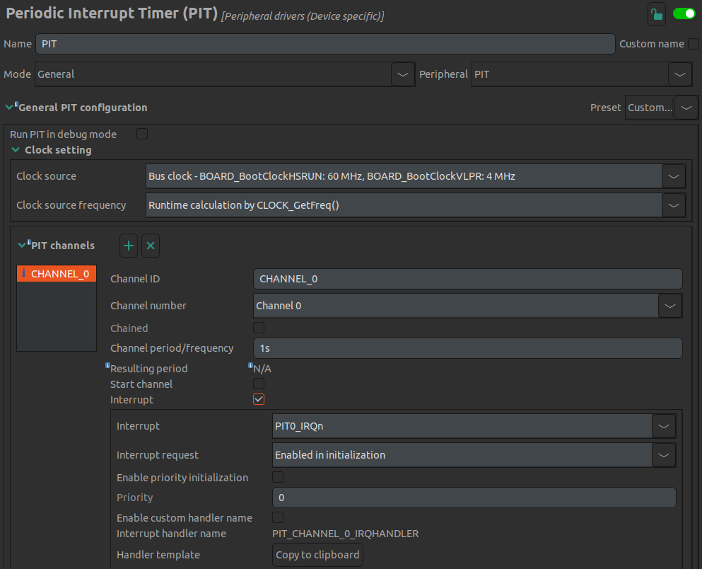

Lab 6 : Timer Interrupt and C Code
Seneca College SEH500 Microprocessors and Computer Architecture
Introduction
Documentation of the Cortex-M4 instruction set can be found here:
In our labs so far, we've been programming the processor directly using assembly language. In this lab, we'll explore combining assembly language with C programming language and how to use them interchangeablely in a program.
Procedures
Similar to the previous lab.
-
Open MCUXpresso then start a new C/C++ project based on the Freedom board model that you have.
-
In the new project configuration, this time, also select "pit" as one of the driver. Rename the project then leave all other settings as default.

Figure 6.1 Select pit in the project setting
-
In previous labs, we wrote all of our code in assembly language using the
.sfile extension. In this lab, we are going to explore how to integrate C-code together with assembly code in a single project. The first way of integrating assembly code into a C-program is by using the inline assembler method.__asm volatile (" <Assembly Code Here> ");Replace (or comment out) the PRINTF "Hello World" line with the following:
__asm volatile (" mov r0, #1 "); -
Build and create the dissambly code (or from the dissambly view window during debug). Find the inline assembly code that you wrote. Take a screenshot of it and confirm that the C-code and the assembly code are the same. Paste your result into the Post-Lab question on blackboard.
-
You can also write multi-line inline assembly code as below. As the
__asmfunction is a direct replicate of what you wrote into assembly, you'll need to use newline character to specify a newline in assembly. You can also align your C-code to make it more readable.__asm volatile (" mov r1, #1 \n" " mov r3, #0x75 "); -
Transfer the following code from Lab 5 into inline assembly code and include it into the inline code you have.
main: mov r0, #1 mov r3, #0x75 push {r0, r3} mov r0, #6 mov r3, #7 pop {r0, r3} -
Another method to include assembly code is by adding a
.sfile into the project. Create afunction.sfile in the source folder and paste the following extract from Lab 5 into it..syntax unified @ unified syntax used .cpu cortex-m4 @ cpu is cortex-m4 .thumb @ use thumb encoding .text @ put code in the code section .global function1 @ declare as a global variable .type function1, %function @ set to function type function1: push {r5, lr} @ Save values in the stack mov r5, #8 @ Set initial value for the delay loop delay: subs r5, r5, #1 bne delay pop {r5, pc} @ pop out the saved value from the stack -
Next, place a function prototype at the top of your code and a function call after your inline assembly code but before the while loop into your main function.
Add this on top:
void function1();And this after your inline assembly code:
function1(); -
Set a breakpoint at the
__asmfunction then debug your code. Once the program started, hit resume until it reach the breakpoint then "Step Into (F5)" the code and see what happens. You program should jump to the code in your assembly file when it hit the function call. -
Your task now is to translate the assembly code in the loop portion of Lab 5 (see below) into C-code without using any assembly code except for moving data into register (use inline assembly for such task). Use variables and move the function call as necessary. The programmer's intentioned of the C-code should be the same as the assembly code.
Translate the following:
loop: add r0, r0, #1 cmp r0, #5 bne loop mov r5, #9 bl function1 mov r3, #12You can use a
forloop or awhileloop. After you are done and get the desired result, compare the compiled assembly code with the one we have from Lab 5 and comment on the difference in terms of the type and number of instructions used. -
Copy your
whileorforloop C-code and it's assembly code and paste it into Blackboard. -
Lastly, we are going to include a periodic interrupt timer (PIT) into our code to generate an interrupt once every second. We'll use the built-in ConfigTools in MCUXpresso for ease of implementation. The ConfigTools allow us to setup components of the processor and the microcontroller board in a quick and fast manner instead of manually coding all the necessary settings. Go to "ConfigTools > Peripherals" from the top menu. In the "Components" tab, Under "Peripheral drivers (Device specific)" add the "PIT" configuration components.
-
Under the PIT settings, uncheck "start channel". Leave everything default so the setting page should look like this:

Figure 6.2 PIT settings
-
Once confirmed, click "Update Code" at the top menu button bar and click yes when prompted. The peripherals.c and peripherals.h will not be updated accordingly to include the timer interrupt settings.
-
Next, we'll need to add some code for the interrupt handler and to start the interrupt.
Paste the following handler code into your program.
void PIT_CHANNEL_0_IRQHANDLER(void) /*ISR to process PIT channel 0 interrupts*/ { PIT_ClearStatusFlags(PIT, PIT_CHANNEL_0, kPIT_TimerFlag); //clear PIT channel 0 interrupt status flag PRINTF("*\r\n"); }Then use the following code to start the PIT in your main function. You can put it at the beginning of main after all the initialization or just before the empty while loop.
PIT_StartTimer(PIT_PERIPHERAL, PIT_CHANNEL_0); -
Build and debug. Open a serial monitor to see the serial output. Let the program run and you should see an "*" being printed every second. Verify with a watch that the output is once per second. Take a screenshot of your serial monitor output and paste it into blackboard.
Post-Lab Questions
Using the skills and knowledge acquired from this lab, answer the following post-lab question(s) on Blackboard. Due one week after the lab.
-
Answer all the questions in the lab in Blackboard.
-
Modify your code from Step 16 so instead of printing "*" every second (using your timer interrupt function), print a statement that display the number of minutes and seconds since the timer started. Paste your code and a screenshot of the output into blackboard.
Reference
[1] Yiu, J. (2013). The Definitive Guide to ARM® Cortex®-M3 and Cortex®-M4 Processors. (3rd ed.). Elsevier Science & Technology.